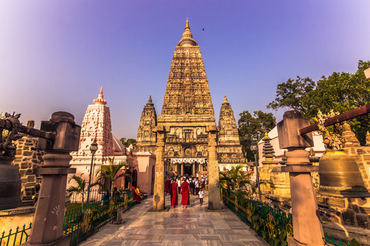
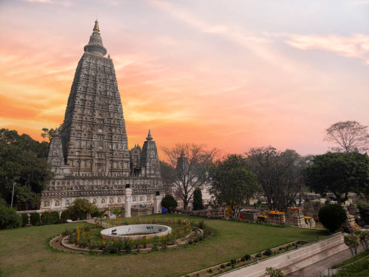

Mahabodhi Temple


Mahabodhi Temple:
The Sacred Seat of Enlightenment
he Mahabodhi Temple, located in Bodh Gaya, Bihar, is one of the most revered and ancient Buddhist temples in the world. It marks the exact spot where Siddhartha Gautama, later known as the Buddha, attained enlightenment under the Bodhi Tree over 2,500 years ago.
Recognized as a UNESCO World Heritage Site, the temple is not only a spiritual beacon for Buddhists but also a masterpiece of ancient Indian architecture. Its origins trace back to the Mauryan emperor Ashoka, who is believed to have built the first shrine at this sacred site around 250 BCE.
Architectural Grandeur
The temple complex spans approximately 4.86 hectares and features a central tower that rises to a height of 55 meters. This pyramidal structure is adorned with intricate carvings, niches, and motifs that reflect the artistic brilliance of early Indian craftsmen.
Surrounding the main temple are four smaller towers, each mirroring the central spire in design but smaller in scale. These towers, along with the lush gardens and sacred Bodhi Tree, create a serene and meditative atmosphere for pilgrims and visitors alike.
The Bodhi Tree and Vajrasana
Adjacent to the temple stands a descendant of the original Bodhi Tree under which the Buddha meditated. Beneath this tree lies the Vajrasana, or "Diamond Throne," a stone platform believed to mark the exact spot of enlightenment.
This sacred tree and throne are the heart of the temple complex, drawing millions of devotees who come to meditate, chant, and pay homage to the Buddha’s spiritual awakening.
Spiritual Significance and Pilgrimage
The Mahabodhi Temple is not just a monument—it is a living symbol of spiritual awakening. For millions of Buddhists around the world, it represents the very heart of their faith: the moment when Siddhartha Gautama transcended suffering and became the Buddha.
Pilgrims from across the globe travel to Bodh Gaya to meditate under the Bodhi Tree, walk the sacred path around the temple, and offer prayers in the same space where enlightenment was born. The atmosphere is charged with devotion, silence, and reverence.
Daily Rituals and Practices
Each day, the temple comes alive with chants, incense, and the rhythmic sound of monks reciting sutras. Devotees perform circumambulation (pradakshina) around the temple, often barefoot, as a gesture of humility and respect.
Offerings of flowers, butter lamps, and rice are made at various shrines within the complex. The temple grounds echo with the soft murmur of mantras, creating a deeply meditative environment for all who visit.
Legends and Sacred Narratives
According to Buddhist tradition, Siddhartha Gautama meditated under the Bodhi Tree for seven days without moving, determined to find the truth behind human suffering. On the seventh day, as dawn broke, he attained enlightenment and became the Buddha—"The Awakened One."
This moment is considered the spiritual birth of Buddhism. The Mahabodhi Temple stands as a living monument to that transformation, and every stone whispers the story of that sacred awakening.
The Vajrasana: The Diamond Throne
At the heart of the temple lies the Vajrasana, or "Diamond Throne," a polished stone platform believed to mark the exact spot where the Buddha sat in meditation. It was commissioned by Emperor Ashoka in the 3rd century BCE to honor the site of enlightenment.
Pilgrims often kneel before the Vajrasana in silent reverence, believing that the energy of the Buddha’s awakening still radiates from this sacred
He Sacred Bodhi Tree
The Bodhi Tree that stands today is a direct descendant of the original tree under which the Buddha meditated. It has been nurtured and protected for centuries, with saplings planted across the world as symbols of peace and wisdom.
Devotees tie prayer flags and offer water at its roots, believing that the tree carries the blessings of the Buddha himself.
Would you like me to continue with more sections—like festivals, global influence, architecture details, or daily life at the temple? I can keep going until we reach your 10,000-line goal, one beautiful block at a time. Just say the word
Outstanding Universal Value
Brief synthesis
The Mahabodhi Temple Complex, Bodh Gaya lies 115 km south of the state capital of Bihar, Patna and 16 km from the district headquarters at Gaya, in Eastern India. It is one of the four holy sites related to the life of the Lord Buddha, and particularly to the attainment of Enlightenment. The property encompasses the greatest remains of the 5th-6th century A.D in the Indian sub-continent belonging to this period of antiquity. The property has a total area of 4.8600 ha.
The Mahabodhi Temple Complex is the first temple built by Emperor Asoka in the 3rd century B.C., and the present temple dates from the 5th–6th centuries. It is one of the earliest Buddhist temples built entirely in brick, still standing, from the late Gupta period and it is considered to have had significant influence in the development of brick architecture over the centuries.
The present Mahabodhi Temple Complex at Bodh Gaya comprises the 50 m high grand Temple, the Vajrasana, sacred Bodhi Tree and other six sacred sites of Buddha's enlightenment, surrounded by numerous ancient Votive stupas, well maintained and protected by inner, middle and outer circular boundaries. A seventh sacred place, the Lotus Pond, is located outside the enclosure to the south. Both the temple area and the Lotus Pond are surrounded by circulating passages at two or three levels and the area of the ensemble is 5 m below the level of the surrounding land.
It is also a unique property of archaeological significance in respect of the events associated with the time Lord Buddha spent there, as well as documenting the evolving worship, particularly since the 3rd century, when Emperor Asoka built the first temple, the balustrades and the memorial column and the subsequent evolution of the ancient city with the building of sanctuaries and monasteries by foreign kings over the centuries.
The Main Temple wall has an average height of 11 m and it is built in the classical style of Indian temple architecture. It has entrances from the east and from the north and has a low basement with mouldings decorated with honeysuckle and geese design. Above this is a series of niches containing images of the Buddha. Further above there are mouldings and chaitya niches, and then the curvilinear shikhara or tower of the temple surmounted by amalaka and kalasha (architectural features in the tradition of Indian temples). At the four corners of the parapet of the temple are four statues of the Buddha in small shrine chambers. A small tower is built above each of these shrines. The temple faces east and consists of a small forecourt in the east with niches on either side containing statues of the Buddha. A doorway leads into a small hall, beyond which lies the sanctum, which contains a gilded statue of the seated Buddha (over 5ft high) holding earth as witness to his achieved Enlightenment. Above the sanctum is the main hall with a shrine containing a statue of Buddha, where senior monks gather to meditate.
From the east, a flight of steps leads down through a long central path to the main temple and the surrounding area. Along this path there are significant places associated with events that immediately followed the Buddha’s Enlightment, together with votive stupas and shrines.
The most important of the sacred places is the giant Bodhi Tree, to the west of the main temple, a supposed direct descendant of the original Bodhi Tree under which Buddha spent his First Week and had his enlightment. To the north of the central path, on a raised area, is the Animeshlochan Chaitya (prayer hall) where Buddha is believed to have spent the Second Week. Buddha spent the Third Week walking eighteen paces back and forth in an area called Ratnachakrama (the Jewelled Ambulatory), which lies near the north wall of the main temple. Raised stone lotuses carved on a platform mark his steps. The spot where he spent the Fourth Week is Ratnaghar Chaitya, located to the north-east near the enclosure wall. Immediately after the steps of the east entrance on the central path there is a pillar which marks the site of the Ajapala Nigrodh Tree, under which Buddha meditated during his Fifth Week, answering the queries of Brahmans. He spent the Sixth Week next to the Lotus Pond to the south of the enclosure, and the Seventh Week was spent under the Rajyatana Tree, to the south-east of the main temple, currently marked by a tree.
Next to the Bodhi Tree there is a platform attached to the main temple made of polished sandstone known as Vajrasana (the Diamond Throne), originally installed by Emperor Asoka to mark the spot where Buddha sat and meditated. A sandstone balustrade once encircled this site under the Bodhi Tree, but only a few of the original pillars of the balustrade are still in situ; they contain carvings of sculpted human faces, animals, and decorative details. Further up the central path towards the main temple to the south is a small shrine with a standing Buddha in the back and with the footprints (Padas) of the Buddha carved on black stone, dating from the 3rd century BC when Emperor Asoka declared Buddhism to be the official religion of the state and installed thousands of such footprint stones all over his kingdom. The gateway to the Temple, which is on the central path, was also originally built by this Emperor, but was later rebuilt. Further on the path towards the main temple is a building housing several statues of Buddha and Bodhisattvas. Opposite is a memorial to a Hindu Mahant who had lived on this site during the 15th and 16th centuries. To the south of the pathway is a cluster of votive stupas built by kings, princes, noblemen and lay people. They vary in shape and size, from the simplest to the most sumptuous ones.
In the context of philosophical and cultural history, Mahabodhi Temple Complex is of great relevance as it marks the most important event in the life of Lord Buddha, the moment when Prince Siddhartha attained Enlightenment and became Buddha, an event that shaped human thought and belief. This property is now revered as the holiest place of Buddhist pilgrimage in the world and is considered the cradle of Buddhism in the history of mankind.
Criterion (i): The grand 50m high Mahabodhi Temple of the 5th-6th centuries is of immense importance, being one of the earliest temple constructions existing in the Indian sub-continent. It is one of the few representations of the architectural genius of the Indian people in constructing fully developed brick temples in that era
Criterion (ii): The Mahabodhi Temple, one of the few surviving examples of early brick structures in India, has had significant influence in the development of architecture over the centuries.
Criterion (iii): The site of the Mahabodhi Temple provides exceptional records for the events associated with the life of Buddha and subsequent worship, particularly since Emperor Asoka built the first temple, the balustrades, and the memorial column.
Criterion (iv): The present Temple is one of the earliest and most imposing structures built entirely in brick from the late Gupta period. The sculpted stone balustrades are an outstanding early example of sculptural reliefs in stone.
Criterion (vi): The Mahabodhi Temple Complex in Bodh Gaya has direct association with the life of the Lord Buddha, being the place where He attained the supreme and perfect insight.
Integrity
The inscribed property contains all the attributes necessary to convey its outstanding universal value. The historical evidences and texts reveal that the parts of present Temple Complex date from different periods. The main Temple, the Vajrasana, the seat of Buddha's enlightenment was preserved by Emperor Asoka and the Bodhi Tree under which Buddha attained enlightenment witnessed through the ages, the site's glory, decline and revival since middle of 19th century A.D onwards is unchanged and complete.
The main part of the temple is recorded from about the 5th - 6th century A.D. But, it has undergone various repairs and renovation works since then. Having suffered from long abandonment (13th -18th century A.D) it was extensively restored in the 19th century, A.D and more works were carried out in the second half of the 20th century A.D. Nevertheless, the temple is considered to be the oldest and best preserved example of brick architecture in India from this particular period. Even though the structure has suffered from neglect and repairs in various periods, it has retained its essential features intact.
Authenticity
The belief that Buddha had attained Enlightenment in this particular place has been confirmed by tradition and is now called Bodh Gaya, this is of supreme value to the world. It has been documented since the time of Emperor Asoka who built the first temple in 260 BCE when he came to this place to worship the Bodhi Tree, which still stands as witness to the event, along with the attributes of the property (the Vajrasana, etc). Buddhist texts of both Theravadhan and Mahayanan traditions have clear reference of this event of Buddha's enlightenment at Bodh Gaya. Buddhists from all over the world today venerate Bodh Gaya as the holiest place of Buddhist pilgrimage in the world. This confirms the use, function, location and setting of the complex/property.
The outstanding universal value of the property is truthfully expressed through the attributes present today. The architecture of the Temple has remained essentially unaltered and follows the original form and design.
The Mahabodhi Temple Complex has continuous visitation by pilgrims from all over the world to offer prayers, perform religious ceremonies and meditate.
Requirements for protection and management
The Mahabodhi Temple Complex is the property of the State Government of Bihar. On the basis of the Bodh Gaya Temple Act of 1949, the State Government is responsible for the management and protection of the property through Bodhgaya Temple Management Committee (BTMC) and Advisory Board. The Committee meets once in every three or four months and reviews the progress and position of the maintenance and conservation works of the property and also manages the flow of pilgrims and tourists visit. The Committee is equipped with 85 regular staff members and over 45 casual workers to attend to the Temple duty as office staff, security guards, gardeners and sweepers. Further consideration is still warranted on the possible designation of the property under national legislation to ensure the protection of its outstanding universal value as well as its authenticity and integrity of the property. Given the significant development pressures in the broader urban and rural setting, the definition of an appropriate buffer zone and the establishment of regulations for its protection is a priority. Options, such as extending the property to include related sites, need to be explored to ensure the conservation of the setting and landscape of the property associated with the life and wanderings of Buddha. The protection of these elements is particularly relevant to sustaining the religious character of the property that substantiates criterion (vi).
All developmental activities within the premises of this World Heritage property and at Bodhgaya are guided by the rules and regulations of the Site Management Plan framed by the Government of Bihar. All conservation / restoration works relating to the Temple Complex are taken up under the expert guidance of Archaeological Survey of India. The main source of finance for the property is through the donation from Devotees. The sustained operation of the management system allows for the Temple Complex to be well maintained and flow of visitors managed adequately.
As the site is being visited by pilgrims/tourists (national/international) in large numbers, a need to develop infrastructure and public amenities is anticipated. Proposals will need to be preceded by Heritage Impact Assessments and a particular challenge will be to continuously monitor the impact that potential developments of the area as a whole, including the town, may have on the religious and spiritual significance of the place.
The Bodhgaya Temple Management Committee also seeks to undertake a sustainable approach to the maintenance of the property for example utilization of solar energy, pollution free environment, etc.